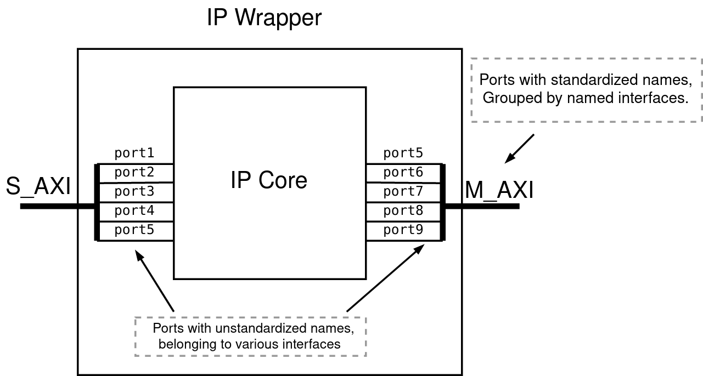

Introduction¶
Topwrap is a generator for HDL wrappers and top modules.
Wrappers are used to standardize names of ports that belong to an interfaces (e.g. UART, AXI etc.)

Top modules connect IPs and/or Wrappers by either ports` names or interfaces` names to ease connecting multi-wire interfaces without the need to connect each wire separately.

nMigen¶
Topwrap uses nMigen to generate HDLs. It’s a toolbox for building complex digital hardware. See nMigen Github for more information.
FuseSoC¶
FuseSoC is used as build abstraction tool. It automates Vivado project generation and runs Vivado pipelines to generate bitstream and program FPGAs. It can be installed using pip. For more information visit FuseSoC Github.